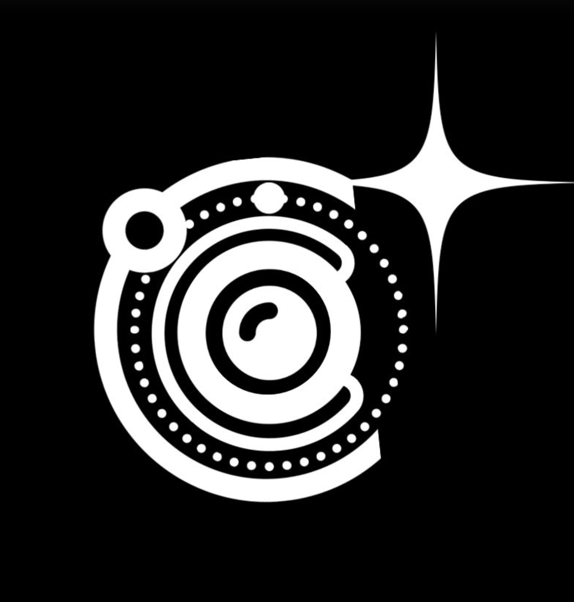

CAPTOORA BIOMETRICS
CLON DIGITAL & MONITOREO 3D DE PRECISIÓN
Biometría Corporal
ACTIVO
Simetría Muscular
98.6%
Alineación Sagital
0.8° Desvío (Óptimo)
Densidad Miofascial
Clase A+
Progresión & Salud
SEM 01 - 12
Masa Magra Activa
+2.4 kg
Grasa Subcutánea
-3.8%
Índice Cintura/Cadera
0.74 (Atlético)
REGISTRO DE AVANCES
Semana 01
Semana 12 (Clon Validado)
Captoora Biometrics
Fotografía clínica y deportiva de precisión fusionada con tu Clon Digital 3D para seguimiento estético, salud y rendimiento.
Agendar Escaneo Biométrico